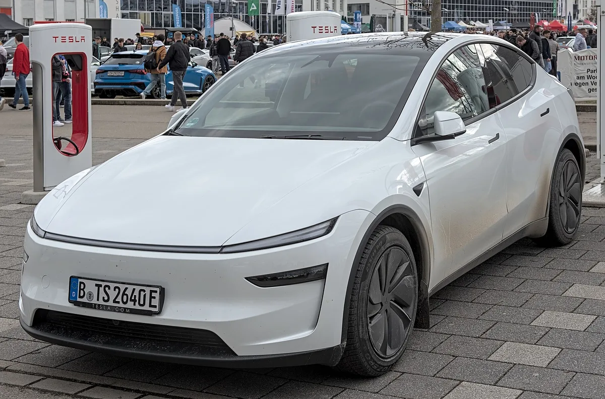
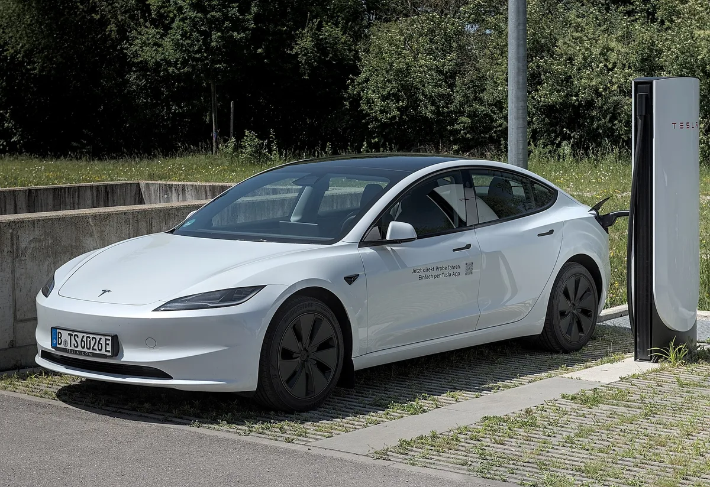
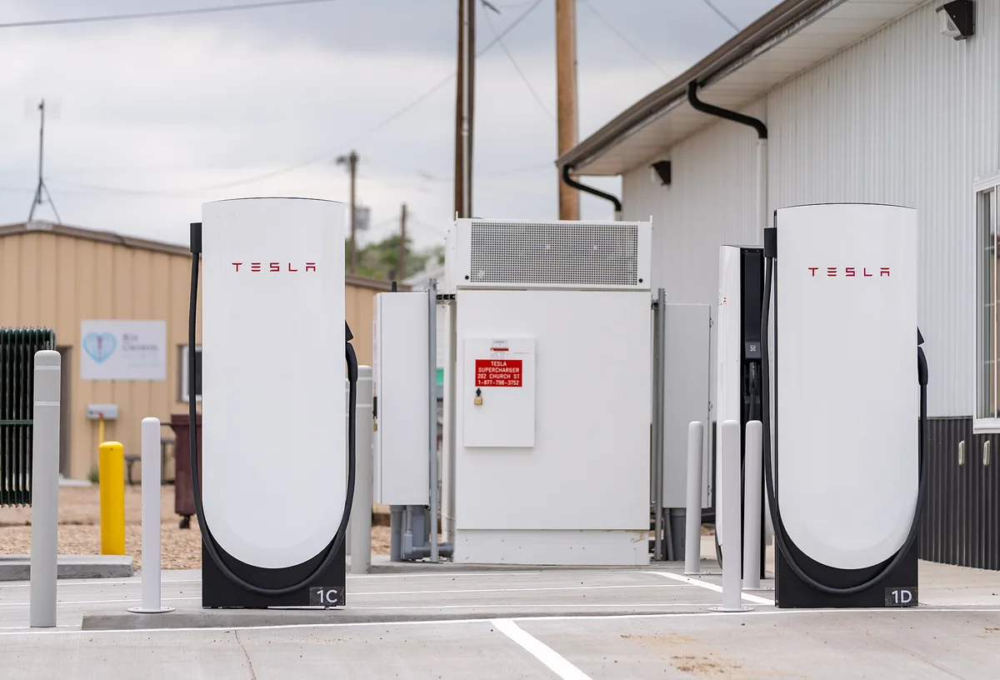

▲ 테슬라 기가 텍사스 1번 건물 외관 참고 사진 ⓒ Larry D. Moore (Wikimedia Commons, CC BY 4.0)
"이번 전망은 누구도 믿기 어렵다." 테슬라가 10월 2일(금) 2026년 3분기 생산·인도량을 발표한다. 이 글을 쓰는 9월 30일 현재 테슬라는 아직 3분기 인도량을 발표하지 않았다(웹 검색으로 확인, 발표 전). 월가 추정치는 약 42만 2,000대에서 48만 2,000대까지 약 6만 대(60,242대) 벌어져 있다. Electrek은 "월가가 2분기 인도량을 7만 4,000대 낮게 본 뒤라 이번 전망에도 신뢰가 없다"는 취지로 지적했다(2분기에는 테슬라가 회사 집계 컨센서스 406,024대를 그만큼 웃돌았다).
이 글은 결과를 예측하지 않는다. Electrek(9월 28일), The Motley Fool(9월 24·27일), Drive Tesla Canada, Teslanorth, CnEVPost 등 발표 전 보도를 교차해 추정치가 어디에서 어떻게 갈리는지, 발표 때 무엇을 봐야 하는지를 정리한 사전 분석이다. 발표 결과가 나오면 이 글의 수치는 실제 값과 달라질 수 있다.
1. 이미 발표됐나 — 확인 결과와 일정
먼저 발표 여부를 확인했다. 테슬라 투자자 관계(IR) 페이지에는 2026년 2분기 생산·인도 발표문이 올라와 있고, 3분기 항목으로는 회사가 취합해 게시한 'Q3 2026 Delivery Consensus'만 검색된다. 3분기 실제 인도량은 Electrek·The Motley Fool·Drive Tesla Canada 등 모두 "10월 2일 발표 예정"이라고 적고 있고, 9월 30일에 다시 검색해도 발표문은 나오지 않았다. 즉 오늘 기준으로 발표 전이다.
테슬라 IR의 지난 분기 발표문은 아래에서 확인 가능하다.
▲ 테슬라 기가 텍사스 1번 건물 외관(2022년 6월 촬영). 인도량 통계는 이런 글로벌 생산 거점의 합산 결과다 ⓒ Larry D. Moore (Wikimedia Commons, CC BY 4.0)
📍 이 글이 다루는 범위
· 다루는 것: 발표 전 월가 추정치, 비교 기준, 지표별 관전 포인트
· 다루지 않는 것: 실제 인도량 예측, 주가 방향 전망
· 확인 못한 것: 테슬라 3분기 실적(손익) 발표일 — 회사 공식 확정 공지는 확인하지 못했다. 일부 일정 사이트(TipRanks 등)는 10월 28일, 다른 곳은 10월 21~23일 추정으로 서로 다르다
· 테슬라 IR 컨센서스 원문 페이지는 접속 제한(403)으로 열지 못했고, Drive Tesla Canada와 Teslanorth가 같은 수치를 보도했다
2. 월가 추정치 지도 — 6만 대 벌어진 이유
Electrek이 정리한 6개 기관 추정치와 각종 컨센서스를 표로 놓았다. 가장 높은 JPMorgan(482,000대)은 기존 516,000대에서 낮춘 값이고, 골드만삭스(435,000대)는 490,000대에서 크게 내렸다. 출처가 서로 다른 컨센서스가 함께 돌아다닌다는 점이 이번 전망의 특징이다.
| 출처 | 추정 인도량 | 비고 |
|---|---|---|
| JPMorgan | 482,000대 | 기존 516,000대에서 하향 |
| Barclays | 475,000대 | - |
| UBS | 약 470,000대 | 전년 대비 약 5% 감소로 추산, 목표주가 385달러 유지 |
| StoneX | 446,500대 | - |
| Goldman Sachs | 435,000대 | 기존 490,000대에서 하향 |
| Cantor Fitzgerald | 421,758대 | 집계 중 최저 |
| 6개 기관 중앙값 | 약 458,000대 | Electrek |
| Visible Alpha 컨센서스 | 449,000~454,000대 | Motley Fool은 약 454,000대로 표기 |
| Bloomberg 컨센서스 | 466,000대 | Electrek |
| 테슬라 IR 게시 컨센서스 | 평균 461,974대(24명), 중앙값 463,406대 | UBS·모건스탠리·골드만삭스·바클레이즈·JP모건·BofA 등 포함(Drive Tesla Canada·Teslanorth 보도) |
| 예측시장(Kalshi) | 470,000대 초중반 | Electrek |
"컨센서스"가 449,000대에서 466,000대까지 출처마다 다른 이유는 조사 대상 기관 수와 시점이 다르기 때문이다. 이 글에서는 어느 하나를 "정답"으로 고르지 않고 약 45만~46만 대 전후가 시장 눈높이라고만 서술한다. 회사 IR이 게시한 컨센서스(24명)는 모델 3·Y가 약 450,712대, 나머지 모델(사이버트럭 등)이 약 11,285대로 잡혀 있다는 것이 Drive Tesla Canada와 Teslanorth의 공통된 설명이며, 원문 IR 페이지는 직접 열람하지 못했다. 같은 보도에 따르면 애널리스트들의 2026년 연간 인도량 컨센서스는 약 177만 대다.

▲ 테슬라 모델 Y(2025년형). IR 컨센서스에서 모델 3·Y가 약 450,712대로 인도량의 대부분을 차지한다 ⓒ Alexander Migl (Wikimedia Commons, CC BY-SA 4.0)
3. 왜 줄어든다고 보나 — 497,099대라는 기저
대부분의 추정이 전년 동기 대비 감소를 가리키는 가장 큰 이유는 비교 기준이다. 전년 3분기 인도량은 497,099대로 역대 기록이었고, 미국에서 2025년 9월 30일 종료된 7,500달러 연방 전기차 세액공제 전에 수요가 몰린 영향이 컸다는 것이 일반적인 배경 설명이다(이 글의 참고 기사들이 직접 밝힌 내용은 아니다). Electrek 집계 기준으로 현재 추정치는 전년 대비 -3%에서 -15% 범위다. 테슬라 IR이 게시한 컨센서스 평균(461,974대)은 전년 대비 7.1% 감소, 올해 2분기(480,126대) 대비 3.8% 감소다.
| 기준 | 인도량 | 추정 범위 대비 |
|---|---|---|
| 2025년 3분기 | 497,099 | 모든 추정치(최고 482,000)가 이보다 낮음 |
| 2026년 2분기 | 480,126 | JPMorgan 추정(482,000)만 소폭 상회 |
| 3분기 추정 범위 | 421,758~482,000 | 전년 대비 -3%~-15% |
4. 미국·중국 부진 — 8월 지표가 보여준 것
Electrek은 8월 지표를 근거로 들었다. 테슬라 미국 판매는 전년 대비 26% 감소한 약 40,816대, 중국 소매 판매는 12.4% 감소한 50,047대였다. 중국 수치는 중국승용차협회(CPCA) 자료로 CnEVPost가 -12.43%, 7월(-32.91%)보다 감소폭 축소, 1~8월 누적 316,251대(-12.44%)로 확인했다. 미국 수치는 Electrek이 집계 기관을 밝히지 않아 이 글에서도 출처를 확인하지 못했다. 8월 한 달 수치이므로 분기 전체(7~9월)와 그대로 이어 해석할 수는 없다.
중국은 소매만 봐서는 부족하다. CnEVPost에 따르면 8월 상하이 공장 수출은 36,119대(+38.7%), 소매와 수출을 합친 도매는 86,166대(+3.57%)로 소폭 늘었다. Electrek은 "유럽 EV 판매는 호황이고 북미는 급락"이라고 요약했다. 즉 지역별로 방향이 엇갈려 합계가 어디로 갈지 가늠하기 어렵다.
지역별 반례도 있다. Drive Tesla Canada는 캐나다에서 EVAP 리베이트 프로그램과 상하이 기가팩토리산 4만 달러 이하 모델 3(새 수입 쿼터 규정)이 판매를 밀어 올리고 있다고 전했다. 캐나다는 전체 판매량에서 비중이 작아 글로벌 합계를 바꿀 정도는 아니라고 보는 것이 자연스럽지만, 미국 부진을 다른 시장이 어느 정도 상쇄하는지는 발표 때 지역별 공개가 없을 가능성이 커서 확인이 어렵다.

▲ 테슬라 모델 3(2023년형 표기 페이스리프트). 캐나다에서는 상하이산 저가 모델 3가 판매를 끌어올리고 있다는 보도가 있다 ⓒ Alexander Migl (Wikimedia Commons, CC BY-SA 4.0)
5. 2분기와 비교 — 인도량은 최다였지만 이익률은 꺾였다
올해 2분기 테슬라는 480,126대를 인도해 역대 2분기 기록을 세웠다(전년 384,122대 대비 25% 증가, Electrek). Electrek은 당시 급증의 배경으로 지정학 이슈에 따른 유가 상승과 앞선 분기에 쌓인 재고를 꼽았고, 실제로 2분기에는 생산(451,758대)보다 인도가 많아 재고를 약 28,000대 줄였다고 전했다. 이 재고 완충이 3분기에도 이어졌는지가 이번 발표의 관전 포인트다. 그러나 앞선 기사 인도량은 역대 최다인데, 영업이익률은 4.1%에서 1.4%로 주저앉았다에서 정리했듯 영업이익률은 전년 4.1%에서 1.4%로 하락했다. 그래서 3분기 인도량은 "얼마나 팔았나"뿐 아니라 "재고와 가격 정책을 어떻게 운영했나"라는 질문과 함께 읽힌다.
| 항목 | 2026년 2분기(실적) | 2026년 3분기(발표 전) |
|---|---|---|
| 인도량 | 480,126대 | 추정 421,758~482,000대 |
| 생산량 | 451,758대(인도가 생산보다 약 28,000대 많음) | Motley Fool은 약 487,000대로 추정 |
| 모델 3·Y / 기타 | 467,762대 / 12,364대 | IR 컨센서스 450,712대 / 11,285대 |
| 재고 일수 | 15일(Motley Fool) | 발표 시 공개 여부 확인 필요 |
| 에너지 저장 | 13.5GWh(전년 대비 +40%) | IR 컨센서스 15.9GWh(2분기 대비 약 +18%) |
| 직전 분기 컨센서스 대비 | 회사 집계 406,024대 → 실제 480,126대(+약 74,000대, Electrek) | 추정치 폭 약 6만 대 |
6. 발표 때 무엇을 볼까 — 관전 포인트 4가지
The Motley Fool은 재고와 생산을 함께 봐야 한다고 짚었다. 이 매체는 인도량이 485,000대를 넘으면서 재고 15일 수준을 유지하면 주가에 호재가 될 수 있다는 자체 분석을 내놨고, 생산 추정치는 약 487,000대로 제시했다. 이는 예측이 아니라 해당 매체의 기준선이며, 발표 결과가 아직 없으므로 이 기준이 옳은지는 확인할 수 없다.
✅ 발표 당일 체크리스트
· 총 인도량: 컨센서스(449,000~466,000대)와 6개 기관 중앙값(458,000대) 어느 쪽에 가까운가
· 생산량 대비 인도량: 생산이 더 많다면 재고가 쌓였다는 신호일 수 있다(Motley Fool 기준선 생산 487,000대)
· 모델 3·Y 외 차종: 사이버트럭 등 기타 모델은 IR 컨센서스상 약 11,285대. Motley Fool은 사이버캡·세미 생산량이 "기타 모델"에 섞여 나온다는 점을 짚었다
· 에너지 저장 배치량: 컨센서스 15.9GWh(2분기 13.5GWh), UBS 16.9GWh — 차량 부진을 상쇄하는지

▲ 테슬라 로드스터 프로토타입(참고 사진, Commons 파일명 기준 "2020 prototype"). 신형 시연은 10월 15일로 연기됐다 ⓒ Smnt (Wikimedia Commons, CC BY-SA 4.0)
7. 발표문에서 읽을 수 있는 것과 없는 것
테슬라 IR이 내는 분기 발표문의 제목은 "Production, Deliveries & Deployments"다. 지난 2분기 자료를 인용한 보도를 보면 총생산량, 총 인도량, 모델 3·Y와 "기타 모델"의 구분, 에너지 저장 배치량이 들어간다. 지역별 판매나 이익은 이 발표문에 없고, 이익률·재고 일수 같은 세부 지표는 별도의 실적 발표에서 다뤄진다. 3분기 실적(손익) 발표일은 위에서 밝힌 대로 회사 공식 확정을 확인하지 못했다.

▲ 테슬라 슈퍼차저 충전소(참고 사진). 에너지·충전 사업은 인도량과 별개로 발표문의 "배치(Deployments)" 항목에서 다뤄진다 ⓒ Tony Webster (Wikimedia Commons, CC BY 4.0)
✅ 발표문 읽는 순서
· 총 인도량 → 생산량과의 차이(재고 증감)
· 모델 3·Y와 기타 모델 구분
· 에너지 저장 배치량(GWh)
· 지역별·손익 정보는 발표문이 아닌 이후 실적 발표에서 확인
8. 로드스터 10월 15일 — 인도량 이후의 일정
인도량 발표 직후에도 시장의 관심은 이어진다. 테슬라는 원래 10월 1일로 예고한 차세대 로드스터 시연 행사를 텍사스 악천후 예보를 이유로 10월 15일로 미뤘다. Electrek 등에 따르면 테슬라는 "심각한 기상 조건이 예보됐고 행사를 야외에서만 열 수 있다"고 설명했고, 예보는 강수확률 82%에 뇌우와 시속 약 30마일 돌풍이었다. 자세한 경위는 테슬라 로드스터 공개 10월 15일로 또 연기 기사에 정리했다. 10월 15일 연기는 Electrek(9월 28일)과 Motor1 등 여러 매체가 같은 내용으로 보도했다. 인도량 발표(10월 2일)가 이미 확정된 숫자라면, 로드스터 시연은 미래 제품 서사라는 점에서 성격이 다르다. 두 이벤트가 2주 간격으로 이어지는 구도가 됐지만, 이 일정이 주가에 어떤 영향을 줄지는 발표 전인 지금 예단할 수 없다.
추정치가 이만큼 갈리는 만큼, 발표 결과가 컨센서스를 웃돌 가능성과 밑돌 가능성이 모두 열려 있다. 아래는 이 사전 분석의 한계다.
⚠️ 이 사전 분석의 한계
· 추정치는 애널리스트의 예상이며 실제 인도량과 다를 수 있다(2분기에도 7만 4,000대 차이)
· 8월 월간 지표(미국 -26%, 중국 -12.4%)는 Electrek 인용이며 분기 전체와 다를 수 있다
· 테슬라 IR 컨센서스는 2차 보도(Teslanorth)로만 확인했다
· 국내(한국) 판매량은 이번 글의 범위 밖이며 3분기 국내 수치는 확인하지 않았다

▲ 마이애미 테슬라 전시장의 사이버트럭. 사이버트럭 등 기타 모델은 IR 컨센서스상 분기 1만 1,000대 안팎으로 잡혀 있다 ⓒ Phillip Pessar (Wikimedia Commons, CC BY 2.0)
9. 요약
테슬라는 아직 3분기 인도량을 발표하지 않았고, 발표는 10월 2일(금)이다. 이 글은 발표 전 시점의 추정치와 관전 포인트를 정리한 것이며 결과를 예단하지 않는다.
월가 추정은 421,758~482,000대로 벌어져 있고, 컨센서스는 출처별로 약 449,000~466,000대다. 전년 3분기 497,099대(세액공제 종료 전 수요 몰림이 배경으로 알려짐)와 올해 2분기 480,126대가 비교 기준이다.
발표 때는 총 인도량과 함께 생산 대비 재고, 에너지 저장 배치, 지역별 흐름을 함께 봐야 한다. 로드스터 시연 행사는 10월 15일로 연기돼 인도량 발표 이후 일정으로 이어진다.